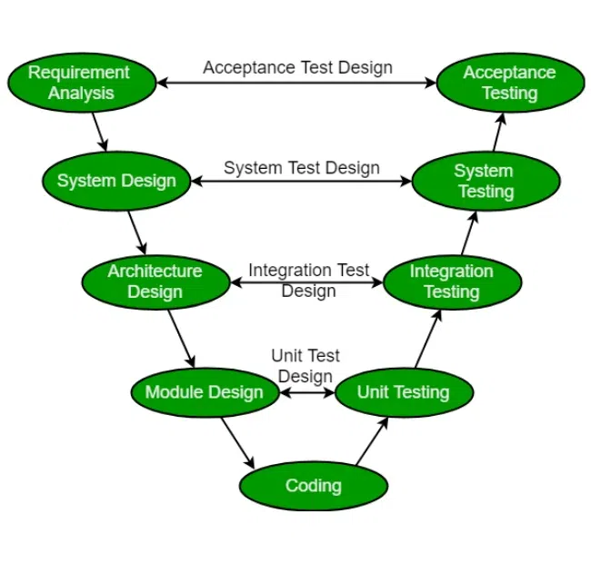

2.5. SDLC V-Model
The V-model is a type of SDLC model where the process executes sequentially in a V-shape. It is also known as the Verification and Validation model. It is based on the association of a testing phase for each corresponding development stage. The development of each step is directly associated with the testing phase. The next phase starts only after completion of the previous phase i.e., for each development activity, there is a testing activity corresponding to it.
The V-Model is a software development life cycle (SDLC) model that provides a systematic and visual representation of the software development process. It is based on the idea of a “V” shape, with the two legs of the “V” representing the progression of the software development process from requirements gathering and analysis to design, implementation, testing, and maintenance.
2.5.1. V-Model Design

Requirements Gathering and Analysis: The first phase of the V-Model is the requirements gathering and analysis phase, where the customer’s requirements for the software are gathered and analyzed to determine the scope of the project.
Design: In the design phase, the software architecture and design are developed, including the high-level design and detailed design.
Implementation: In the implementation phase, the software is built based on the design.
Testing: In the testing phase, the software is tested to ensure that it meets the customer’s requirements and is of high quality.
Deployment: In the testing phase, the software is tested to ensure that it meets the customer’s requirements and is of high quality.
Maintenance: In the testing phase, the software is tested to ensure that it meets the customer’s requirements and is of high quality.
The V-Model is often used in safety: In the testing phase, the software is tested to ensure that it meets the customer’s requirements and is of high quality.
2.5.2. Verification Phases
It involves a static analysis technique (review) done without executing code. It is the process of evaluation of the product development phase to find whether specified requirements are met.
- There are several Verification phases in the V-Model:
Business Requirement Analysis This is the first step of the designation of the development cycle where product requirement needs to be cured from the customer’s perspective. in these phases include proper communication with the customer to understand the requirements of the customers. these are the very important activities that need to be handled properly, as most of the time customers do not know exactly what they want, and they are not sure about it at that time then we use an acceptance test design planning which is done at the time of business requirement it will be used as an input for acceptance testing.
System Design: Design of the system will start when the overall we are clear with the product requirements, and then need to design the system completely. This understanding will be at the beginning of complete under the product development process. these will be beneficial for the future execution of test cases.
Arhitectural Design: In this stage, architectural specifications are comprehended and designed. Usually, several technical approaches are put out, and the ultimate choice is made after considering both the technical and financial viability. The system architecture is further divided into modules that each handle a distinct function. Another name for this is High-Level Design (HLD).
At this point, the exchange of data and communication between the internal modules and external systems are well understood and defined. During this phase, integration tests can be created and documented using the information provided.
Module Design: This phase, known as Low-Level Design (LLD), specifies the comprehensive internal design for every system module. Compatibility between the design and other external systems as well as other modules in the system architecture is crucial. Unit tests are a crucial component of any development process since they assist in identifying and eradicating the majority of mistakes and flaws at an early stage. Based on the internal module designs, these unit tests may now be created.
2.5.3. Coding Phases
The Coding step involves writing the code for the system modules that were created during the Design phase. The system and architectural requirements are used to determine which programming language is most appropriate.
The coding standards and principles are followed when performing the coding. Before the final build is checked into the repository, the code undergoes many code reviews and is optimized for optimal performance.
2.5.4. Validation Phases
It involves dynamic analysis techniques (functional, and non-functional), and testing done by executing code. Validation is the process of evaluating the software after the completion of the development phase to determine whether the software meets the customer’s expectations and requirements.
So, V-Model contains Verification phases on one side of the Validation phases on the other side. The verification and Validation phases are joined by the coding phase in a V-shape. Thus, it is called V-Model. There are several Validation phases in the V-Model:
Unit Testing: Unit Test Plans are developed during the module design phase. These Unit Test Plans are executed to eliminate bugs in code or unit level.
Integration Testing: After completion of unit testing Integration testing is performed. In integration testing, the modules are integrated and the system is tested. Integration testing is performed in the Architecture design phase. This test verifies the communication of modules among themselves.
System Testing: System testing tests the complete application with its functionality, inter-dependency, and communication. It tests the functional and non-functional requirements of the developed application.
User Acceptance Testing (UAT): UAT is performed in a user environment that resembles the production environment. UAT verifies that the delivered system meets the user’s requirement and the system is ready for use in the real world.
2.5.5. Importance of V-Model
1. Early Defect Identification
By incorporating verification and validation tasks into every stage of the development process, hte V-Model encourages early testing. This lowers the cost and effor needed to remedy problems later in the development lifecycle by assisting in the early detection and resolution of faults.
2. Determining the Phases of Development and Testing
The V-Model contains a testing phase that corresponds to each stage of the development process. By ensuring that testing and development processes are clearly mapped out, this clear mapping promotes a methodical and orderly approach to software engineering.
3. Prevents “Big Bang” Testing
Testing is freqently done at the very end of the development lifecycle in traditional development models, whic results in a “Big Bang” approach where all testing operations are fouces at once. By integrating testing activities into the development process and encouraging a more progressive and regulated testing approach, the V-Model prevents this.
4. Improves Cooperation
At every level, the V-Model promotes cooperation between the testing and development teams. Through this collaboration, project requirements, design choices, and testing methodologies are better understood, which improves the effectiveness and efficiency of the development process.
5. Improved Quality Assurance
Overall quality assurance is enhanced by the V-Model, which incorporates testing operations at every level. Before the program reaches the final deployment stage, it makes sure that it satisfies the requirements and goes through a strict validation and verification process.
2.5.6. Principles of V-Model
Large to Small: In V-Model, testing is done in a hierarchical perspective, for example, requirements identified by the project team, creating High-Level Design, and Detailed Design phases of the project. As each of these phases is completed the requirements, they are defining become more and more refined and detailed.
Data/Process Integrity: This principle states that the successful design of any project requires the incorporation and cohesion of both data and processes. Process elements must be identified at every requirement.
Scalability: This principle states that the V-Model concept has the flexibility to accommodate any IT project irrespective of its size, complexity, or duration.
Cross Referencing: A direct correlation between requirements and corresponding testing activity is known as cross-referencing.
Tangible Documentation:
This principle states that every project needs to create a document. This documentation is required and applied by both the project development team and the support team. Documentation is used to maintain the application once it is available in a production environment.
- Why preferred?
It is easy to manage due to the rigidity of the model. Each phase of V-Model has specific deliverables and a review process.
Proactive defect tracking – that is defects are found at an early stage..
2.5.7. When to Use the V-Model?
Traceability of Requirements: The V-Model proves beneficial in situations when it’s imperative to create precise traceability between the requirements and their related test cases.
Complex Projects: The V-Model offers a methodical way to manage testing activities and reduce risks related to integration and interface problems for projects with a high level of complexity and interdependencies among system components.
Waterfall-Like Projects: Since the V-Model offers an approachable structure for organizing, carrying out, and monitoring testing activities at every level of development, it is appropriate for projects that use a sequential approach to development, much like the waterfall model.
Safety-Critical Systems:: These systems are used in the aerospace, automotive, and healthcare industries. They place a strong emphasis on rigid verification and validation procedures, which help to guarantee that essential system requirements are fulfilled and that possible risks are found and eliminated early in the development process.
2.5.8. Advantages of V-Model
This is a highly disciplined model and Phases are completed one at a time.
Simple and easy to understand and use.
This model focuses on verification and validation activities early in the life cycle thereby enhancing the probability of building an error-free and good quality product.
It enables project management to track progress accurately.
Clear and Structured Process: The V-Model provides a clear and structured process for software development, making it easier to understand and follow.
Emphasis on Testing: The V-Model places a strong emphasis on testing, which helps to ensure the quality and reliability of the software.
Improved Traceability: The V-Model provides a clear link between the requirements and the final product, making it easier to trace and manage changes to the software..
Better Communication: The clear structure of the V-Model helps to improve communication between the customer and the development team.
2.5.9. Disadvantages of V-Model
High risk and uncertainty.
It is not suitable for projects where requirements are not clear and contain a high risk of changing.
This model does not support iteration of phases..
It does not easily handle concurrent events.
Inflexibility: The V-Model is a linear and sequential model, which can make it difficult to adapt to changing requirements or unexpected events.
Time-Consuming: The V-Model can be time-consuming, as it requires a lot of documentation and testing.
Overreliance on Documentation: The V-Model places a strong emphasis on documentation, which can lead to an overreliance on documentation at the expense of actual development work
2.5.10. Conclusion
A scientific and organized approach to the Software Development Life Cycle (SDLC) is provided by the Software Engineering V-Model. The team’s expertise with the selected methodology, the unique features of the project, and the nature of the requirements should all be taken into consideration when selecting any SDLC models, including the V-Model.